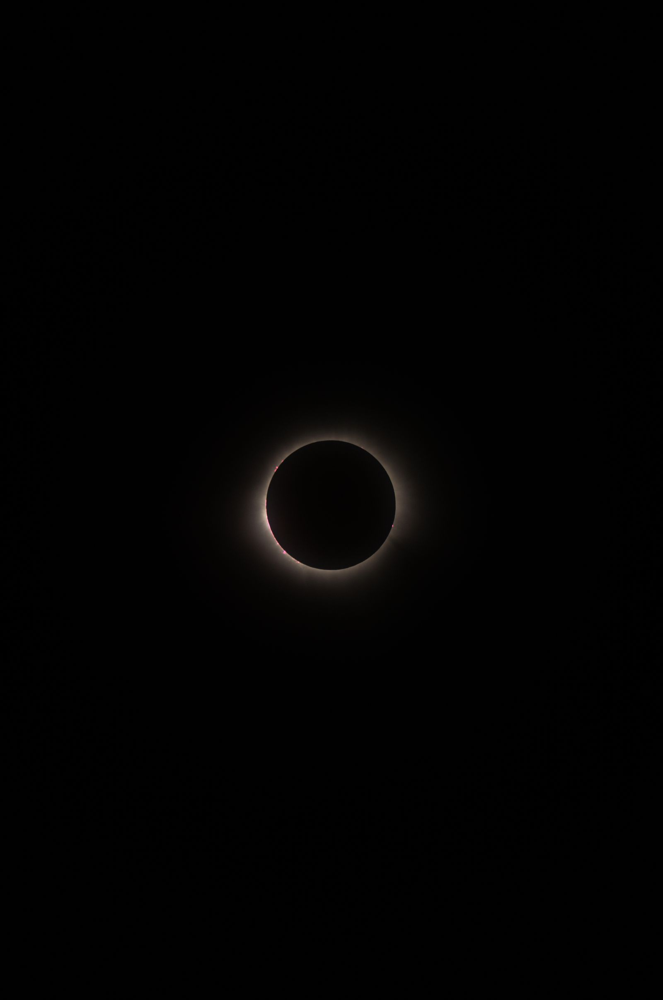

LOG 00 Heliophysics · Observation analysis
The Sun keeps a logbook in powers of ten. I read it for a living.
I’m Mara Lindqvist, a heliophysicist in Boulder. Research groups, satellite operators and agencies hire me to analyse solar observations: what a flare measured, whether anything left the Sun with it, and what the data cannot yet say. My favourite deliverable is the report that tells a client to do nothing — with the coronagraph frames that earn them the right to do nothing, stapled to the back.
▸ DATA — PUBLIC ARCHIVES ONLY: GOES X-RAY FLUX · SDO IMAGERY · CORONAGRAPH RECORDS
▸ EVERY FINDING SIGNED, WITH ITS UNCERTAINTY AND THE OBSERVATION THAT WOULD CHANGE IT
▸ BOULDER, COLORADO — WORKING WITH TEAMS ACROSS NINE TIME ZONES

LOG 01 The scale
One scale, five letters, no adjectives.
Every flare in this log is classed on the GOES soft X-ray scale — the field’s standard ruler. Learn the ruler and most solar headlines deflate to their proper size. Set two events in the explorer and read the ratio the way the log does: as brightness, and only as brightness.
| Class | Peak flux (W/m²) | What the letter certifies — and what it does not |
|---|---|---|
| A | 1.0×10−8 – 9.9×10−8 | The quiet-Sun background range. Logged for context; rarely worth a phone call. |
| B | 1.0×10−7 – 9.9×10−7 | Small brightenings. They set the day’s background and mark which regions are awake. |
| C | 1.0×10−6 – 9.9×10−6 | Common in active periods — the working weather of an active region. Brightness only, as always. |
| M | 1.0×10−5 – 9.9×10−5 | The class operators phone about. The letter certifies a bright flare. It certifies nothing about anything travelling toward Earth. |
| X | 1.0×10−4 and above | The largest events on the scale. For the biggest, the literature quotes the suffix past 9.9 — X10, X20; this log steps the standard 1.0–9.9 within every class. |
The scale, as defined: peak soft X-ray flux in the 1–8 Å band. A1.0 = 1.0×10−8 W/m²; each letter multiplies the base by ten; the suffix multiplies within the class. A flare brightens first in the chromosphere, the thin layer above the visible surface, and heats loops in the corona above it — the flux the scale reads is the sum of that brightening, a whole-Sun number. It is a brightness scale. It has never once been a forecast.
THE FLARE SCALE EXPLORER
SET TWO EVENTS · READ THE RATIO
ENTRY A — FIRST EVENT
C1.0
ENTRY B — SECOND EVENT
X2.0
COMPARISON — PEAK FLUX RATIO
READ THIS BEFORE THE NUMBERThe ratio compares peak X-ray brightness at the Sun — nothing else. It does not say what either event sent toward Earth, or what arrived. Whether anything left the Sun, and in which direction, is a separate question answered from coronagraph imagery, and it is the second half of every event analysis in the case log.
LOG 02 Engagement register
What the practice takes on.
Four kinds of engagement, kept deliberately few. If the work you need is a forecast, this is the wrong practice — forecast centres issue those, with probabilities attached, and I will happily point you at the right desk.
| Service | Client | Programme | Status |
|---|---|---|---|
| Single-event analysis — flare measurement, the eruption question, a signed written finding | Satellite operators | Event response | BOOKING NOW |
| Active-region climatology — flare frequency and class distribution for a named region, limits printed | Research groups | Study | BOOKING NOW |
| Instrument cross-calibration — two observatories, one reconciled scale and catalogue | Instrument teams & observatories | Campaign | ONE SLOT OPEN |
| Embedded analyst days — science support inside an operations team, by the day | Agencies & operators | Retainer | WAITLIST |
LOG 03 Fees & estimator
Fees, printed before the work is.
What moves the price: the volume of data (instruments × years), the response time you need, and how many other teams’ calibrations have to be reconciled with yours. Travel, when an engagement genuinely needs it, is billed at cost and agreed in advance. Nothing is billed that was not quoted.
Engagement pace
Analyst days
The arithmetic, as it will appear on the quote
| Analysis — 6 days × $1,150 (standard) | $6,900 |
| Data preparation & calibration check — flat, per engagement | $480 |
| Written finding & client briefing — flat, per engagement | $720 |
| Estimated total | $8,100 |
An estimator, not a quote: the written quote follows a scoping call and repeats this arithmetic with your numbers in it. Single-event analysis is the fixed-fee product in the list above — it is not estimated by the day.
LOG 04 From the case log
“Mara’s report was the only document in the room that said what the flare had not done. We stood down the safe-mode planning, kept the imaging schedule, and her coronagraph frames were the reason we could defend that call afterwards.”
ON CASE 01 — THE X-CLASS FLARE THAT WAS NOT COMING HERE · READ THE CASE
An event to read, a catalogue to reconcile, a region to characterise?
Write with the decision the analysis has to feed. That sentence, answered honestly, is most of the scoping call.
Enquire